Lab 2: Multiplexed 7-Segment Display
Introduction
In this lab, the I/O pins on the FPGA board were efficiently utilized to drive a dual-seven segment display and five LEDs. This was achieved in combination with a time multiplexer and PNP transistors, considering the limited amount of usable pins. An HDL program was synthesized and mapped onto the FPGA memory, specifically built in a modular design to make reusability and testability tight and easy.
The goal of the lab was to have two 4-digit binary switches that each controlled a 7-segment display and its sum was presented as a binary 5-digit number through a row of 5 LEDs. The constraint was that there were only so many I/O pins, and so each of the segments of the dual seven-segment displays had to share a pin.
LINK: E155 Lab 2 Instructions
Design and Testing Methodology
The time-multiplexed dual seven-segment display was controlled by two enable signals and 7 segment values. Due to the shared resources of the wires and pins, it was necessary to oscillate the enable signals and the segment values, which each connected to the cathodes. The oscillation made sure that only one display would be on at one time, with the correct value. The enable signals each connected to the common anode of a seven-segment display, and if one was high, the other was low to ensure only one would be on. While each cathode shared a pin with the same cathode segment of the other display, the enable signals made sure that, again, only one display would be on, and that the number displayed would belong to the right display and switch.
The PNP transistor was utilized to source more current. With only a 8 mA current being sourced from each pin, it was not enough to power each cathode. As a result, the PNP transistors, given a 5 mA current from the base, or the pins, collected from the 3.3V voltage source and pulled a current enough to power the seven-segment display. The 5 mA current at the base was regulated by a resistor of 560 \(\,\Omega\). This was calculated via Ohm’s Law, \(V = IR\), where the voltage drop was calculated by \(2.6 - 0\). The \(2.6 V\) was found by negating the voltage drop from the 3.3 V emitter to the base, as given by \(V_{BE(Sat)}\) from the datasheet. The \(0 V\) was so due to the pin it connected to was grounded. As a result, \((2.6 - 0) / 0.05 = 520\,\Omega\), and the resistor used was a similar 510 \(\,\Omega\). The datasheet mentioned is linked here.
The resistors for the green LEDs on the breadboard were calculated by \(V = IR\) as well, but this time considering the forward voltage of the green LED, approximated as 2V at a lower current test condition. Considering the voltage drop and the target current of about 2 mA, \(V = IR\) reduces to \(R = (3.3 - 2) / 0.02 = 0.65\), or roughly 620 \(\,\Omega\).
The resistors for the red dual seven-segment display were chosen based on the datasheet linked here. Around a forward current of 5mA, the forward voltage of each LED segment drops down to 1.8V. Due to the \(V_{CE(Sat)} = 0.7\) at a current of 1 mA, there was a voltage drop from the emitter to the collector, resulting in the collector being at roughly 3 V. Knowing this, we can reconfigure Ohm’s Law to figure out the appropriate resistor. \(R = V/I = (3.0 - 1.8) / 0.002 = 600\), or roughly 620 \(\,\Omega\).
Technical Documentation
The source code for the project can be found in this GitHub repository.
Block Diagram
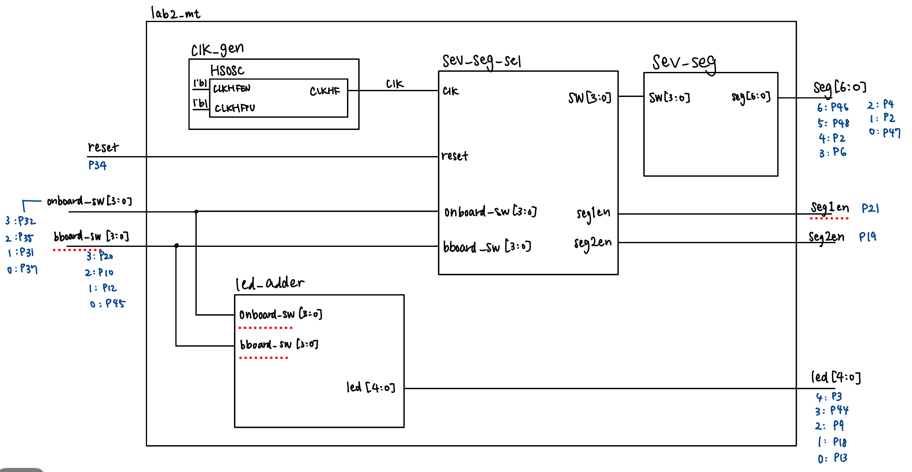
Figure 1 depicts the block diagram of the design. The top-level module lab2_mt instantiates four submodules within it. clk_gen houses the clk generation using the onboard high-speed oscillator through the HSOSC module. sev_seg_sel uses a clock divider to divide that oscillation down into a much slower frequency of 100 Hz. It creates two opposite, toggling enable signals for each dual seven-segment display. It also chooses which of the input switches to output as sw, depending on the enables. sev_seg is a module written for Lab 1 that was repurposed for this lab. It takes in some 4-bit binary switch input to output a 7-bit binary LED segment output. Finally, the led_adder is the module that takes in the 4-bit binary switch values to output their sum as a 5-bit binary LED value.
Schematic
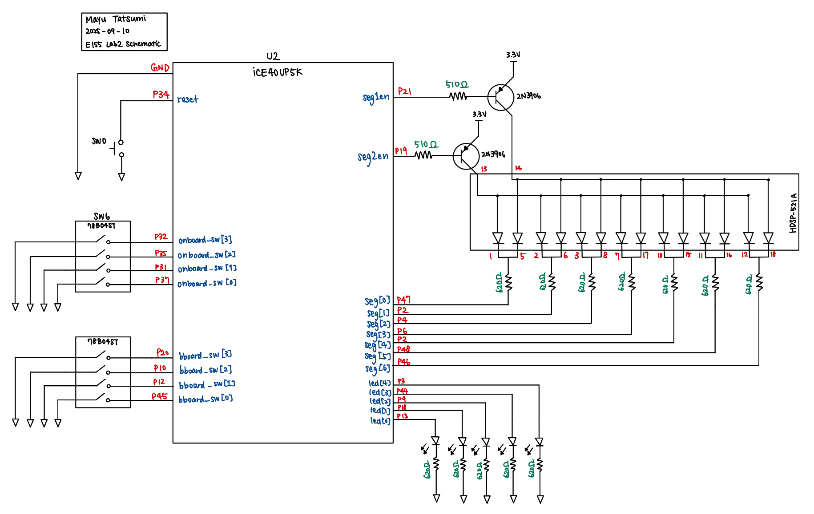
Figure 2 depicts the physical schematic of the design. The I/O pins were maxed out, with every single one of them connected to something. Two 4-digit DIP switches were used as the input for the program, with one soldered onto the PCB and another wired into the breadbord. A green LED each connected to an I/O pin, wired to the breadboard, and connected with a 620 \(\,\Omega\) current-limiting resistor. The reset was routed to a button on the board. Each cathode segment of the dual seven-segment display was connected to a pin, and the two common anodes of the display were connected from a source-generating PNP transistor, which were also connected to a pin each on the FPGA. Those pins were enabled and disabled by the seg1en and seg2en enable signals.
Results and Discussion
Testbench Simulation
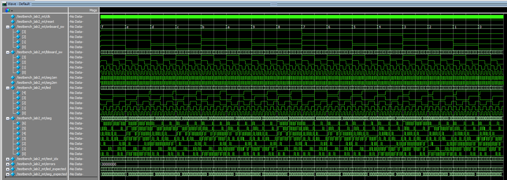
lab2_mt testbench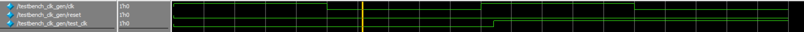
clk_gen testbench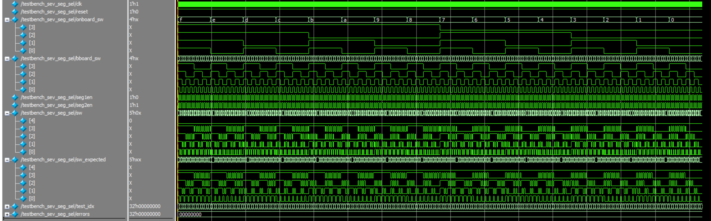
sev_seg_sel testbench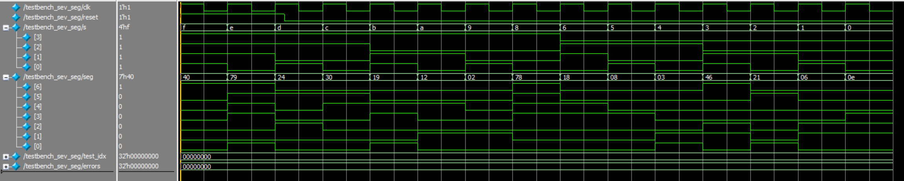
sev_seg testbench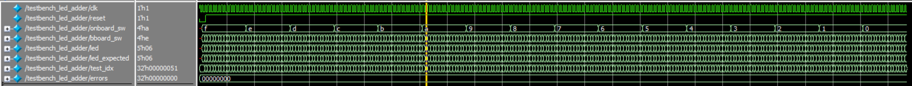
led_adder testbenchThe design met all intended design objectives. Figures 3 to 7 show screenshots of the QuestaSim simulation of the testbenches designed for each module. Figures 8 to 12 below show screenshots of the terminal output of the testbench modules, confirming successful simulation and no errors.
The lab2_mt top-level module’s testbench was the most robust out of all testbenches. By generating a clk within the module, it was possible to apply a stimulus, check via assert of the seg output, and delay some time and then check again while expecting a differing output. With each delay, opposing seg1en and seg2en signals were expected as well. led was expected to stay the same for either signal as long as the stimulus stayed the same.
The clk_gen testbench was a relatively simple design, where it was verified that the clk was off at one point and on the other within a reasonable time frame considering its 6 MHz frequency. The sev_seg_sel testbench was similar to the lab2_mt testbench with delays to check timings and make sure the enable signals are switching, along with the seg values depending on which signal was enabled. sev_seg testbench was repurposed from Lab 1, with only minor naming convention changes applied. The led_adder testbench was simple as well, checking that the adder had the correct logic, and there was no need to consider timing at all.
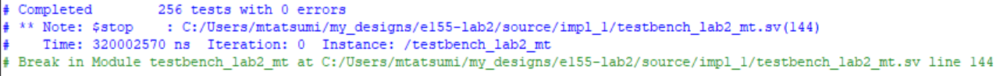
lab2_mt testbench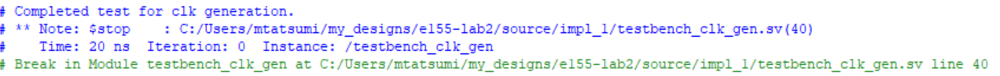
clk_gen outptestbenchut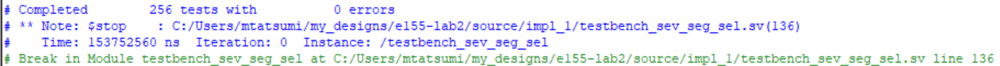
sev_seg_sel testbench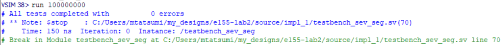
sev_seg testbench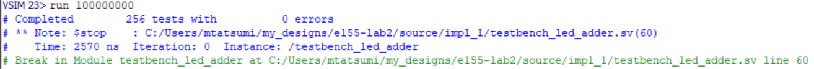
led_adder testbenchConclusion
The design made in this lab successfully operated a time-multiplexed, dual seven-segment display. They were operated by two DIP switches, which provided two 4-digit binary inputs. The sum of both numbers displayed were shown as a 5-digit binary output through green LEDs. The lab exercised knowledge in FPGA I/O pins, PNP transistor calculations, and clock timings. Total hours worked: 16 hours (Rough breakdown: 2 planning, 3 writing code, 5 testbench, 3 wiring, 3 portfolio + AI).
AI Prototype Summary
Log (not including code)
First Prompt: Write SystemVerilog HDL to time multiplex a single seven segment decoder (that decodes from four bits to a common anode seven segment display) to decode two sets of input bits and drive two sets of seven output bits.
You can time multiplex a single seven-segment decoder to drive two separate displays by rapidly switching between them. This approach uses a single decoder and associated circuitry to display different information on each display in an alternating fashion, relying on the persistence of human vision to create the illusion that both are lit simultaneously.
The SystemVerilog module seven_seg_mux implements a time multiplexer for two common anode seven-segment displays. It takes two 4-bit inputs (in_0, in_1), a clock signal (clk), and a reset signal (rst_n). It outputs the 7-bit decoded signal (anode_out) and a 2-bit anode select signal (anode_sel).
Second Prompt: Write SystemVerilog HDL to time multiplex a single seven segment decoder (that decodes from four bits to a common anode seven segment display) to decode two sets of input bits and drive two sets of seven output bits. Use the seven segment decoder and oscillator provided in the attached files.
I can certainly help with that. Here is the SystemVerilog HDL to time multiplex a single seven-segment decoder. This module utilizes the sev_seg and leds modules you provided to drive two displays with different inputs. The time multiplexing is achieved by using a high-speed oscillator to rapidly switch between the two inputs.
This SystemVerilog file, seven_seg_mux.sv, contains a top-level module that demonstrates the time multiplexing. It instantiates the sev_seg module to handle the decoding and uses a clock signal from the leds module to rapidly switch between s1 and s2. It then drives the seg outputs and the an (anode) outputs to select which display is active at any given time.
Reflection
I used Gemini’s 2.5-Flash model for this prototype. Its complete and fixed output for the first prompt is as linked here. It was synthesizable from the first prompt, where the two modules, seven_seg_mux and seven_seg_decoder, were provided and worked in sync with each other. The modules were not surprising at all, and closely replicated what we created for Lab 1. While I can’t be sure about the correctness of the combinational logic in seven_seg_decoder due to its lack of a linked datasheet or part number, this program did synthesize. The clock divider and selector logic in seven_seg_mux were very standard and easy to read. The instantiation was easier to read as a result of the labeled ports as well. I would rate this an 8/10 due to the lack of transparency about the combinational logic.
The second output can be found here. The modules leds and sev_seg were written by me for Lab 1, which was attached to the second prompt, and the module seven_seg_mux was generated by the LLM. There wasn’t anything totally new there either, other than a ternary operator that totally made sense but I hardly use (I know I should use it more). It was a little difficult to read becuase it had so many comments, but I think as a LLM and chatbot, it makes sense that there are a lot of redundant comments to explain its process. It was also able to mesh with my code that I provided pretty seamlessly, which was pretty cool (and scary). With synthesis being successful on the first try and decently clear code, I would rate this module a 9/10.
As a result of these LLM outputs, I think I could possibly use it to help write common and/or redundant idioms. However, I am still uncertain of its ability to read datasheets and figure out the connection between software and hardware, especially regarding pin numbers and naming conventions. While coding, it may be a good idea to consult the LLM to figure out typical idioms and removing small bugs and typos, but I doubt it has the ability to create its own block diagrams and architecture from the ground up, especially without any prior documentation provided.